I’ll always treasure Spencer’s friendship and all the incredible times we had in college as roommates. He will be missed and we are praying for you! Love you guys!
Photos and Memories of Spencer taken by his roommates, Mark Nielsen, Kameron Welsch, and Jacob Molnar.

Below are some of Mark’s memories of Spencer when they lived together in the Marin Apartments in South Provo from August 2010 thru April 2011.
Memories of Spencer
I can’t remember how many times I came back to the apartment feeling tense or stressed because of school or work, but Spencer knew just how to get me laughing which broke the tension I was feeling.
When things were getting more serious between Michelle and I, Michelle asked for some time to consider the next step in our relationship…
That was the longest day and a half in my life!
Spencer, realizing that something was up,asked how things were. He never pressured me to share details of what was going on, but just listened.
I asked him for a blessing and he gave me a wonderful blessing that brought me comfort and peace. That’s when I realized what a true friend Spencer was to me.
Shortly after this, Spencer helped me set up a scavenger hunt for me to be able to propose to Michelle. He sat next to the BYU duck pond, waiting for Michelle to covertly make an “exchange” of briefcases as he read a newspaper. Then he rushed multiple additional clues to significant locations for Michelle and I. He was an incredible friend and sacrificed so much!
While on multiple trips to do some work training in the Maryland/DC. Spencer was excited and always willing to meet up at Chili’s or Buffalo Wild Wings to just hang out and chat. Was so nice to see a friendly face so far away from home!
On Halloween, Spencer dressed up as a mime and despite our many efforts to get him to break character and talk, he never did once… although we did get him to laugh once or twice.
Photos of Spencer
Playground Group Date 2010-09
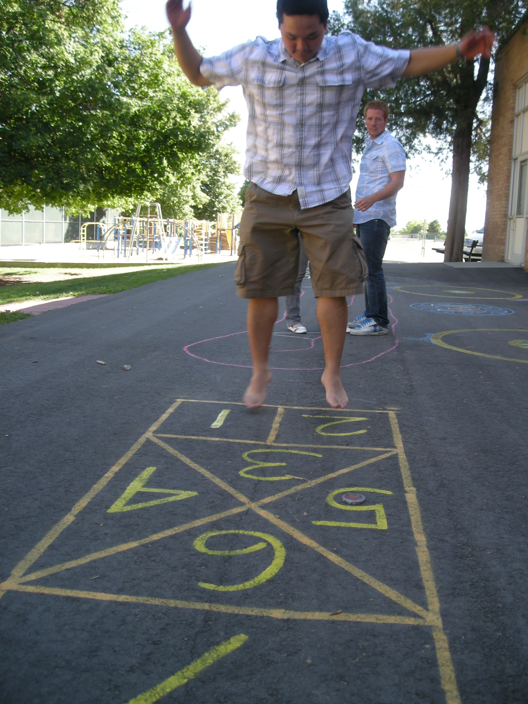
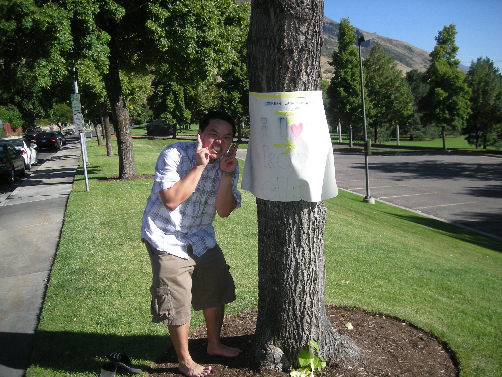
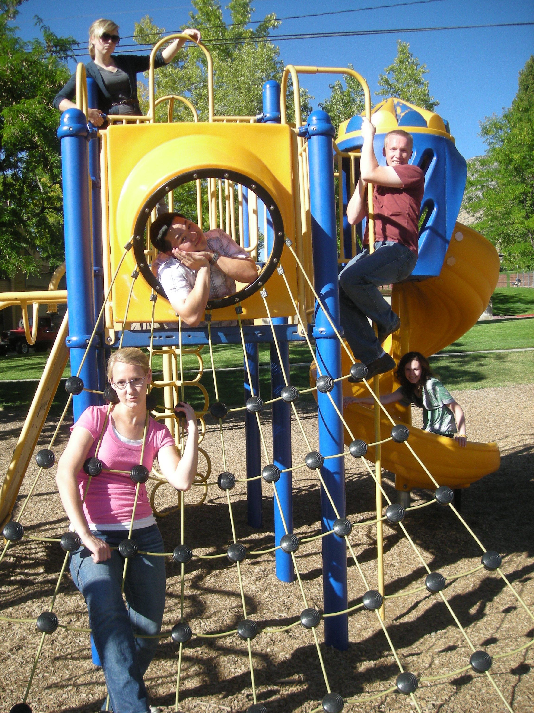
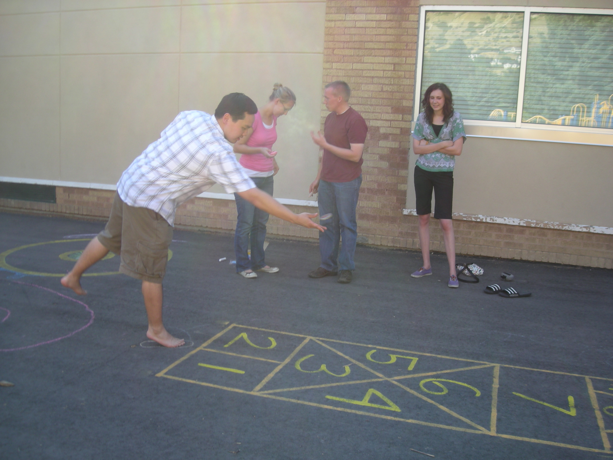
Cookie Delivery - 2010-11


2012 College Days
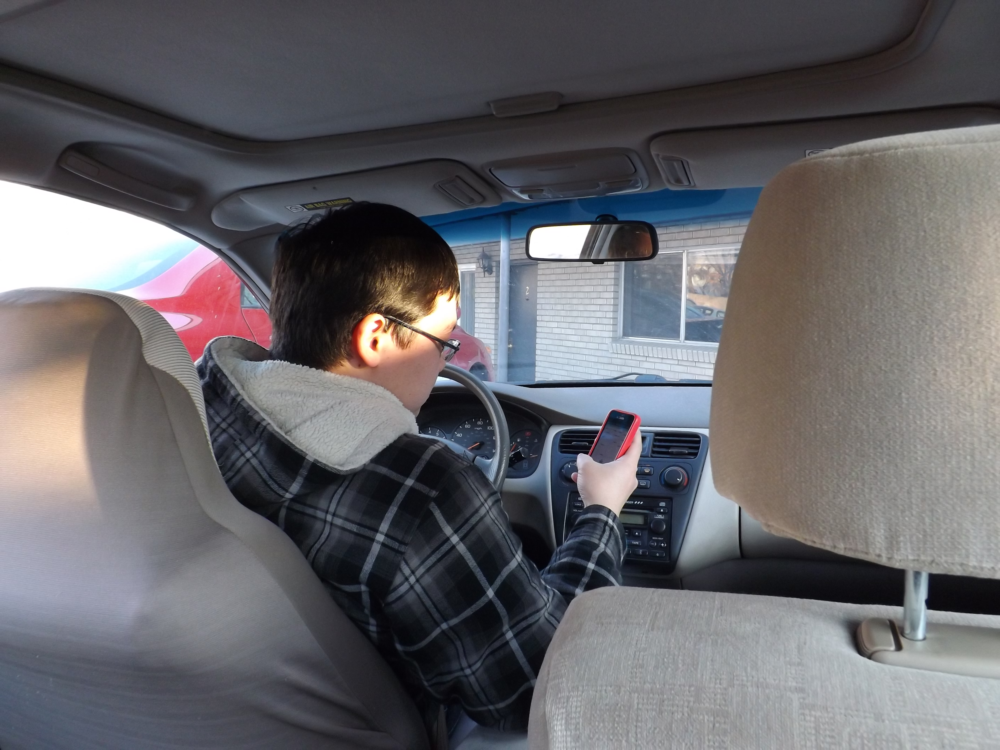
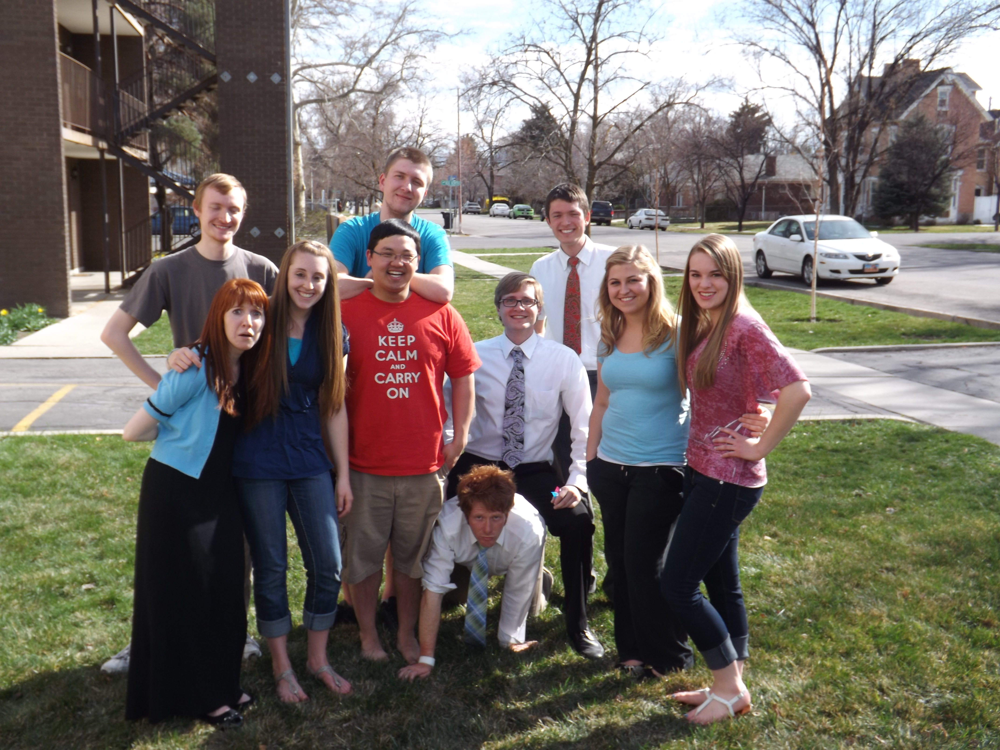
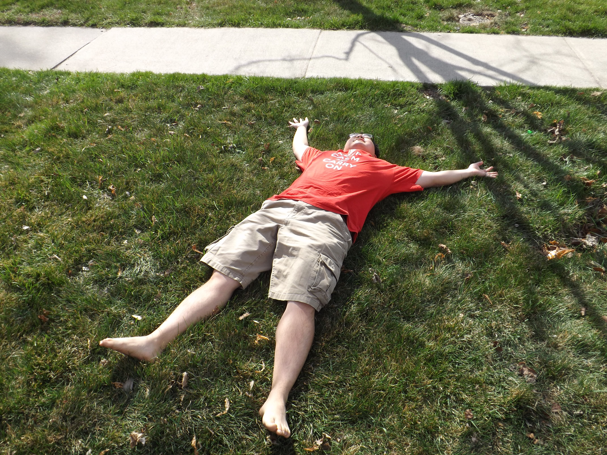
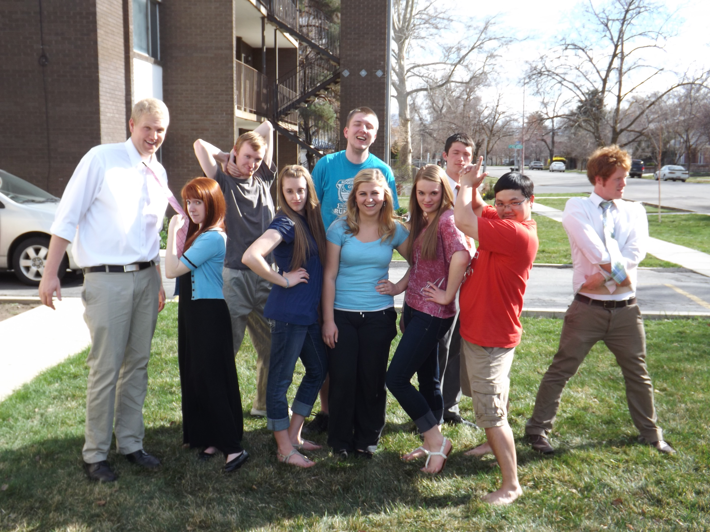
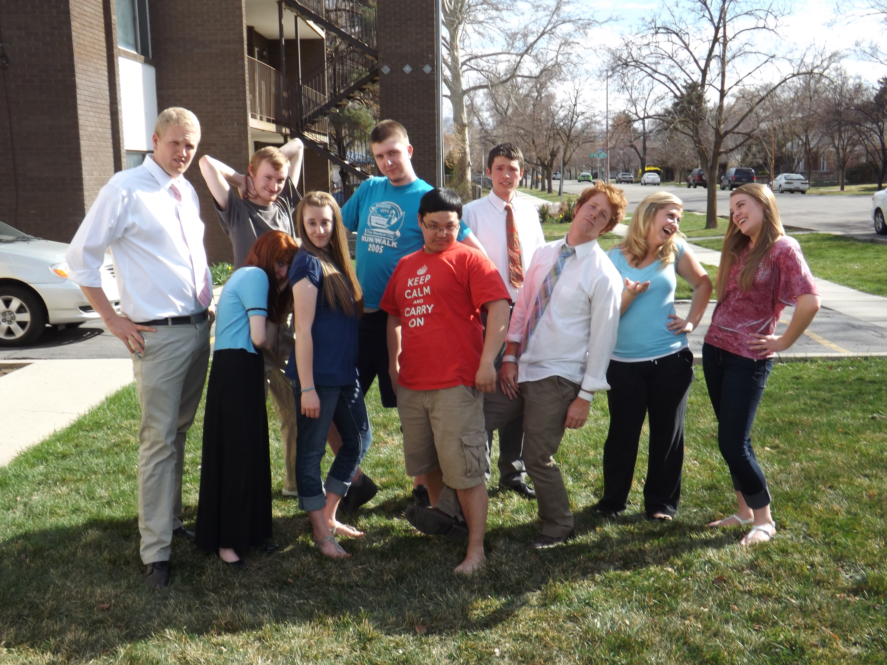
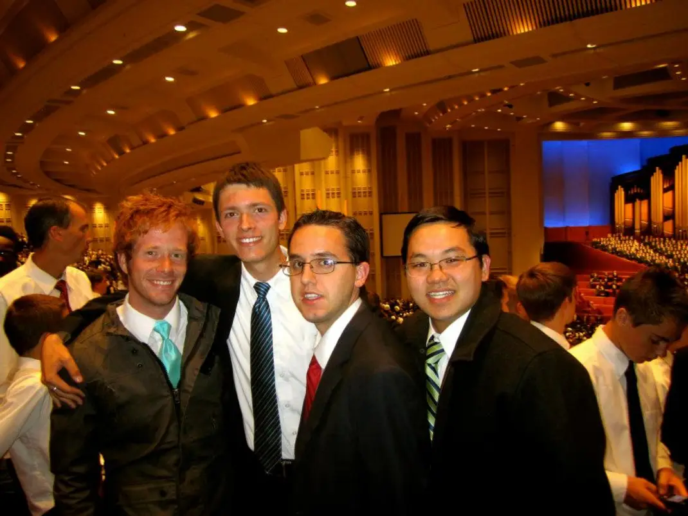
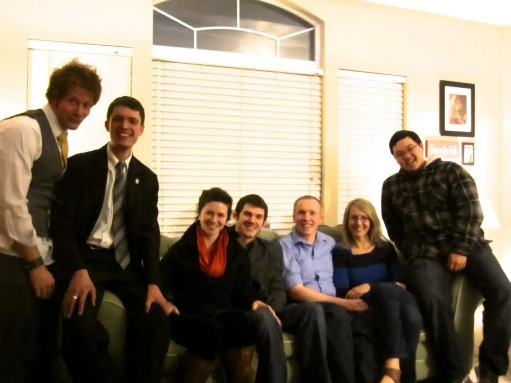
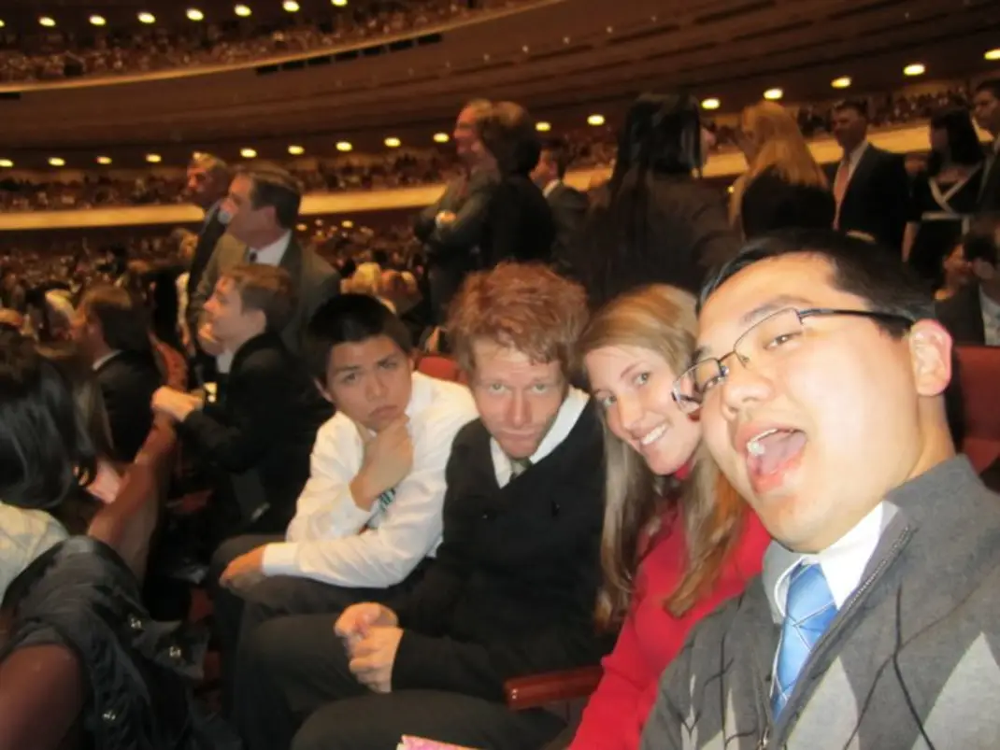
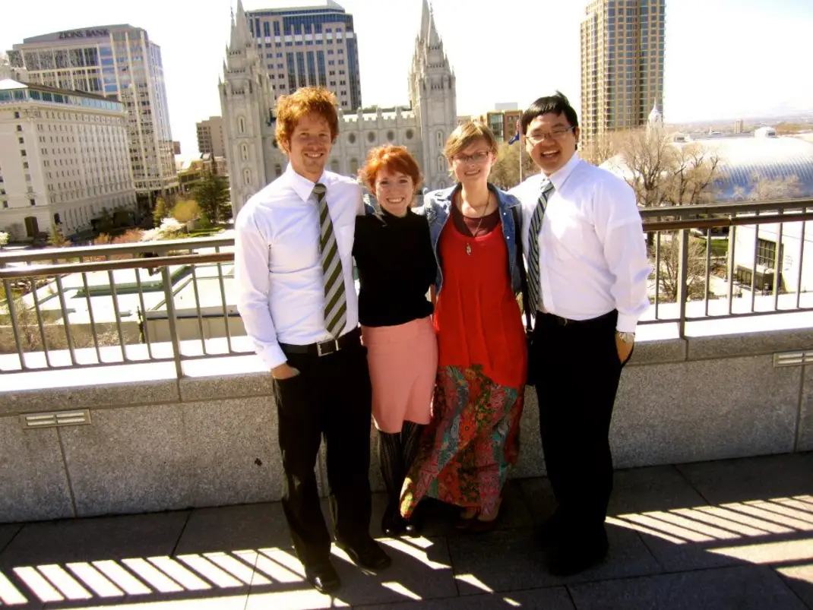
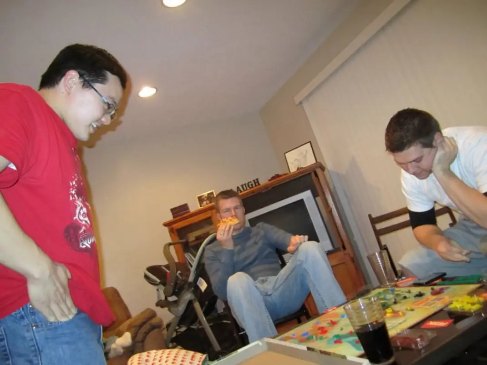
Journal entries about Spencer
27 April 2010 –
Well – we just decided on a place to live! We will be in the Marin apartments… with Spencer and Kameron! Wahoo!
23 Sept. 2010 –
Spencer just gave the most wonderful and sincere prayer I have ever heard in my entire life. He is such a good friend and a great man. I love him for his strength and his faith in me. He prayed/plead for each of us (Me, Kameron, and Mike) and thanked Heavenly Father for us. I’ll never forget how I felt.
10 Oct. 2010 –
[After church] my friends and roomies played Phase 10 together. In memory of 10/10/10.
18 Feb 2011 –
I am ENGAGED! So… first I met Michell at her place. I had given her four gifts, each with… a clue. She figured it out and the place to go was my apartment. Then the scavenger hunt started… Spencer Irvine helped me by giving her the “mission, if she chose to accept it”, by being at “drop points” and taking stuff where I needed it…